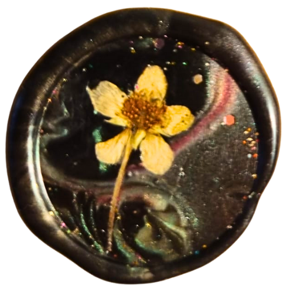
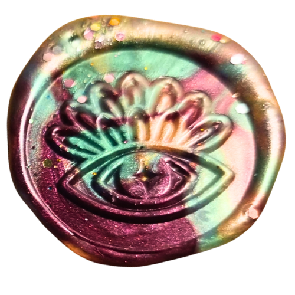
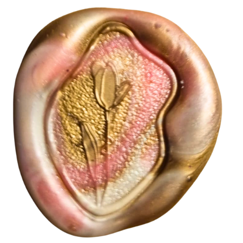

Sigillo Floreale con Fiori Essiccati
Questo sigillo è creato a mano utilizzando vera ceralacca e include fiori essiccati veri per un tocco naturale ed elegante. Ideale per lettere, inviti e pacchetti regalo speciali.
€6.00

con veri fiori essiccati

mix di colori e brillantini

con colori tenui e fantasie delicate
Questo sigillo è creato a mano utilizzando vera ceralacca e include fiori essiccati veri per un tocco naturale ed elegante. Ideale per lettere, inviti e pacchetti regalo speciali.